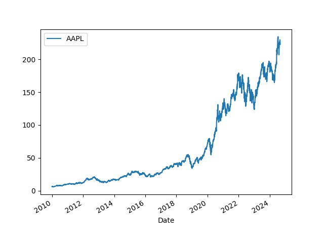

S&P 500 Verisi
Sürekli İnternet'ten senet verisi almak istenmezse bu veri önceden indirilip yerel veri tabanında saklanabilir.. Her günün kapanış fiyatları bir şekilde veriyi her gün eklenirse elimizde canlı, güncel bir veri tabanı olacaktır. Veriyi arka arka okuması gereken al/sat stratejileri İnternet verisi yerine yerel veriyi kullanır.
ABD The Standard and Poor's 500, ya da S&P 500 bir indistır, ABD piyasalarındaki 500 tane en büyük şirketin senet fiyatlarını yansıtır. Bu indisin hangi sembolleri kapsadığını almak için
DATA = "/opt/Downloads/alldata/sp500"
link = ("https://en.wikipedia.org/wiki/List_of_S%26P_500_companies#S&P_500_component_stocks")
df = pd.read_html(link, header=0)[0]
df.to_csv(DATA + "/spy-tickers.csv", index=False)
Bir csv dosyasına bu sembolleri yazmış olduk. Üstteki read_html çağrısını dikkat,
Pandas bir HTML sayfasını bile okuyup DataFrame haline çevirebiliyor.
Tarihi veriyi bu semboller için biz daha önce Yahoo Finance sitesinden indirdik, mesela Apple seneti için, 2010 ve 2024 Eylül arasındaki tarihler için,
import pandas as pd
df = pd.read_csv(DATA + "/2010-2024/AAPL.csv")
df.tail(5)
Out[1]:
Date Adj Close
3685 2024-08-23 226.839996
3686 2024-08-26 227.179993
3687 2024-08-27 228.029999
3688 2024-08-28 226.490005
3689 2024-08-29 229.789993
Bu veriler ilk indirim, yerel tabanı bu verilerle önce dolduracağız. Veri tabanını yaratalım, SQlite tabanı olacak, başlangıç verilerinin olduğu dizindeki tüm CSV dosyaları okunup tabana yüklenecek,
def db_create():
conn = db_conn()
c = conn.cursor()
res = c.execute('''DROP TABLE IF EXISTS TICKER; ''')
res = c.execute('''CREATE TABLE TICKER (dt INTEGER, sym TEXT, c NUMERIC, PRIMARY KEY (dt, sym)); ''')
Veri tabanı tasarımında tarih dt bir tam sayı olarak yazıldı, eğer
tarihleri 20240101 şeklinde yazarsak büyüktür, küçüktür filtreleme
operasyonu hala düzgün çalışacaktır, çünkü mesela 20240201 sayısı
20240101 sayısından büyüktür, 20250101 onlardan da büyüktür, vs.
İlk verileri yükleyelim,
def db_load_2010():
conn = db_conn()
cursor = conn.cursor()
dir = "2010-2024"
for file in glob.glob(DATA + "/" + dir + "/*"):
print (file)
df = pd.read_csv(file)
sym = os.path.basename(file).replace(".csv","")
for idx,row in df.iterrows():
dt = int(row['Date'].replace("-",""))
c = float(row['Adj Close'])
cursor.execute('''INSERT INTO TICKER (dt,sym,c) VALUES (?,?,?)''', (dt,sym,c))
conn.commit()
Şimdi artıksal, güncelleme dosyalarına gelelim. Bu dosyalar farklı bir dizinde olur, her gün için ayrı bir CSV, dosya içinde sembol, kapanış fiyatı verisi bulunur. Mesela Eylül 3 için,
import pandas as pd
df = pd.read_csv(DATA + "/2024/09/2024-09-03.csv")
df.tail(5)
Out[1]:
AJG 294.49
497 ABT 114.66
498 CNC 80.23
499 XYL 130.71
500 FICO 1688.41
501 NVR 9053.67
Artıksal dosyaları yüklemek için
def db_load_inc(dir):
conn = db_conn()
cursor = conn.cursor()
gdir = DATA + "/" + dir + "/**/*.csv"
for file in glob.glob(gdir,recursive=True):
dt = os.path.basename(file).replace(".csv","")
dt = dt.replace("-","")
cursor.execute('''DELETE FROM TICKER where dt = ?''', (dt,))
conn.commit()
df = pd.read_csv(file,header=None)
for idx,row in df.iterrows():
sym, c = row[0], row[1]
print (dt,sym,c)
cursor.execute('''INSERT INTO TICKER (dt,sym,c) VALUES (?,?,?)''', (dt,sym,c))
conn.commit()
Parametre olarak dizin veriliyor, fonksiyon o dizin altında özyineli olarak hangi CSV dosyasını bulursa okuyup yüklüyor, üstteki veri için
db_load_inc(DIR + "/2024/09")
diyebilirdik. Ayrıca kod her gün dosyasını yüklemeden önce o günün kayıtlarını bulursa siler, yani aynı artıksal dosyalar üzerinde birden fazla yükleme çağrısı yapılabilir.
Artık veriyi okuyabiliriz. Bir sembol listesi ve başlangıç yılı kullanarak istediğimiz SP 500 verisini bir zaman serisi olarak alabiliyoruz,
def get_db_tickers(year, tickers):
c = db_conn().cursor()
year = int(str(year) + "0101")
dfs = []
for ticker in tickers:
rows = c.execute("SELECT dt,c from TICKER where sym = ? and dt >= ?", (ticker,year))
df = pd.DataFrame(rows.fetchall(),columns=['dt',ticker])
df['dt'] = pd.to_datetime(df['dt'], format='%Y%m%d')
df = df.set_index('dt')
dfs.append(df)
df = pd.concat(dfs,axis=1)
return df
df = get_db_ticker(2010, ["AAPL"])
df.plot()

Üstteki kodun kullandığı veriler hazırlanmış olarak
https://github.com/burakbayramli/alldata
adresinde, sp500 alt dizini altında bulunabilir. Bu Github deposunu
git clone indirmek ve üstteki kodları gerekli dizine yönlendirmek
yeterli, veri yüklemesi yapılacaktır. Biz bu veriyi güncel tutuyoruz,
artıksal dosyalar yine üstteki depoya konuyor, ek dosyalar gerektikçe
git pull ile aynı depo altından alınabilir.
Yukarı